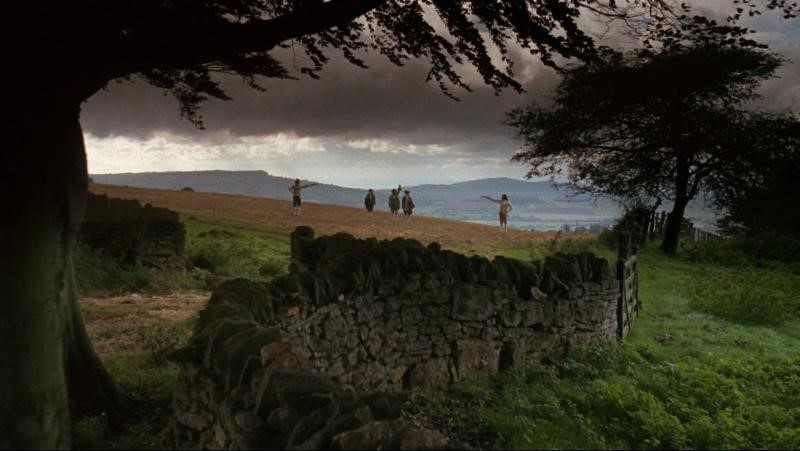
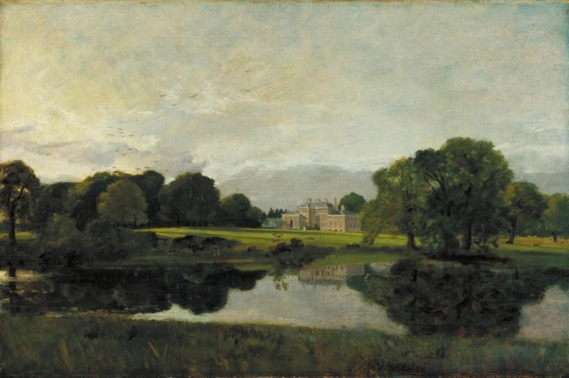
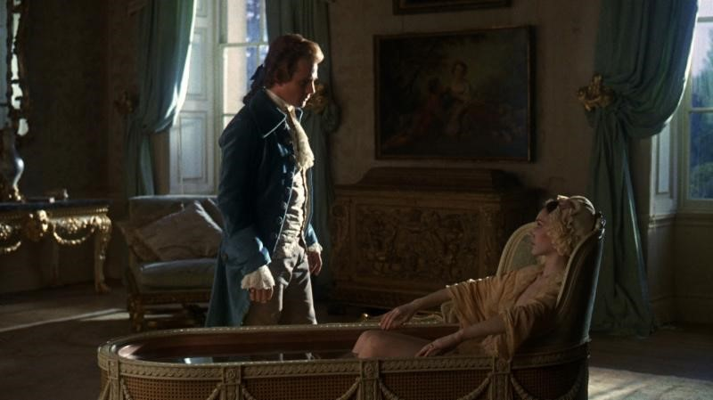
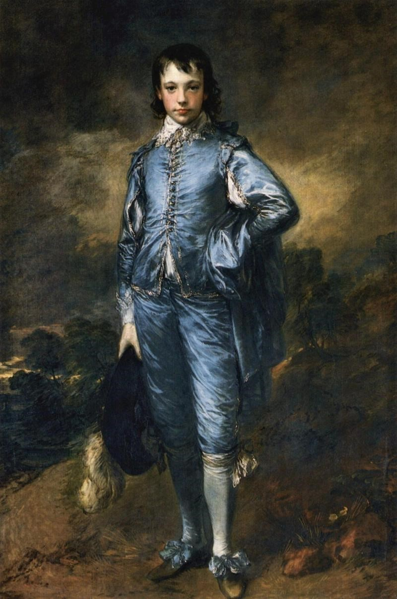
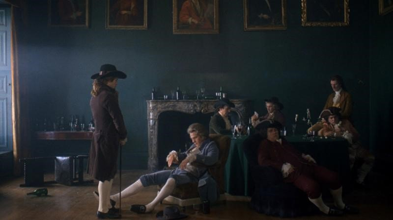
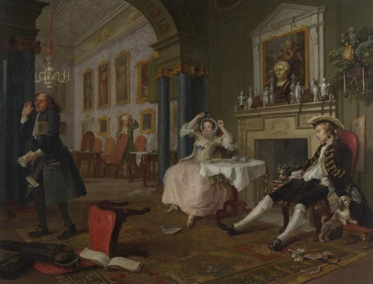

L'analisi precedente condotta sulle proprietà ed entità di Wikidata ci ha permesso di isolare tre macro-aree di insufficienza semantica. Attraverso query mirate, dimostriamo l'assenza o la grave carenza di dati legati all'identità musicale, artistica e tecnologica del film.
L'incompiutezza dell'Identità Musicale
La prima indagine si concentra sul comparto sonoro. Il film, premio Oscar per la miglior colonna sonora adattata, fa un uso maestoso di brani classici. Abbiamo interrogato il grafo cercando i temi musicali registrati.
SELECT DISTINCT ?proprieta ?entitaMusicale ?label
WHERE {
# Proprietà P942: Tema musicale
wd:Q471716 wdt:P942 ?entitaMusicale .
# Recuperiamo la label con il tag di lingua
?entitaMusicale rdfs:label ?label .
FILTER(LANG(?label) = "en")
}
ORDER BY ?labelI risultati appariranno qui...
I dati estratti risultano estremamente limitati, limitandosi a poche menzioni di compositori principali. Incrociando questi dati con fonti esterne accreditate (es. IMDb), emerge che la colonna sonora reale è ben più vasta e stratificata. Nella fase di modellazione proporremo l'ampliamento di questa rete, collegando esplicitamente le singole composizioni musicali (es. la Sarabanda di Händel) come entità autonome.
L'assenza delle Influenze Pittoriche
Come è noto, la direzione artistica di Kubrick si basa quasi interamente su tableaux vivants ispirati alla pittura del Settecento. Abbiamo interrogato Wikidata cercando proprietà standard che codificassero questa ispirazione (come "inspired by" o "influenced by").
PREFIX wd: <http://www.wikidata.org/entity/>
PREFIX wdt: <http://www.wikidata.org/prop/direct/>
PREFIX rdfs: <http://www.w3.org/2000/01/rdf-schema#>
SELECT DISTINCT ?proprietaLabel ?collegamentoLabel
WHERE {
# Definiamo le proprietà usate per le influenze artistiche
VALUES ?prop {
wdt:P941 # "inspired by"
wdt:P737 # "influenced by"
wdt:P180 # "depicts"
}
wd:Q471716 ?prop ?collegamento .
?prop rdfs:label ?proprietaLabel .
?collegamento rdfs:label ?collegamentoLabel .
FILTER(LANG(?proprietaLabel) = "en")
FILTER(LANG(?collegamentoLabel) = "en")
}I risultati appariranno qui...
La query restituisce zero risultati. L'intera sovrastruttura estetica del film è invisibile al Web Semantico. Per questo proporremo di collegare i riferimenti cinematografici direttamente ai dipinti storici, strutturando una nuova proprietà o specializzando quelle esistenti.
Variante logica: La verifica booleana con ASK
Un approccio alternativo e computazionalmente più leggero per eseguire l'audit è l'uso della clausola ASK. Invece di richiedere al database di estrarre e formattare una tabella di valori, chiediamo semplicemente: "Esiste almeno una tripla che soddisfa queste condizioni?" Il motore risponderà solo con un valore binario (Vero o Falso).
PREFIX wd: <http://www.wikidata.org/entity/>
PREFIX wdt: <http://www.wikidata.org/prop/direct/>
PREFIX rdfs: <http://www.w3.org/2000/01/rdf-schema#>
ASK
WHERE {
# 1. Definiamo l'elenco delle proprietà artistiche da controllare
VALUES ?prop {
wdt:P941 # inspired by
wdt:P737 # influenced by
wdt:P180 # depicts
}
# 2. Verifichiamo se esiste almeno una tripla in cui Barry Lyndon le usa
wd:Q471716 ?prop ?collegamento .
}Il risultato booleano apparirà qui...
Il risultato restituito è un categorico FALSE. L'uso di ASK è estremamente sofisticato in fase di diagnosi: consuma pochissime risorse di calcolo sul server di Wikidata ed è perfetto per dimostrare in modo inoppugnabile l'esistenza di una lacuna prima di procedere con la progettazione dell'estensione ontologica.
Mostriamo dunque successivamente un esempio di frame del film che hanno influenze artistiche (Ispirazioni) da quadri reali, per dimostrare visivamente la nostra proposta di miglioramento, in quanto il regista stesso ha dato molta importanta ai dipinti settecentesci per la realizzazione della sua opera.

CINEMATOGRAFIAFrame tratto dal film "Barry Lyndon" (1975)

INFLUENZA STORICA“The Blue Boy” by Thomas Gainsborough (1779)

CINEMATOGRAFIAFrame tratto dal film "Barry Lyndon" (1975)

INFLUENZA STORICA“Malvern Hall” by John Constable (1809)

CINEMATOGRAFIAFrame tratto dal film "Barry Lyndon" (1975)

INFLUENZA STORICA“The Tête à Tête” by William Hogarth (1743)
L'invisibilità dell'Innovazione Tecnologica (Lenti NASA)
Barry Lyndon ha segnato la storia della tecnica fotografica. Abbiamo interrogato il database per verificare la presenza di dati riguardanti l'uso di fotocamere, aspect ratio o lenti specifiche.
La query utilizza un triplo livello di astrazione:
wikibase:directClaimfa da "ponte" permettendoci di estrarre e leggere in chiaro le definizioni delle singole proprietà (es. convertendo P2061 nel testo "aspect ratio"). Senza questo setaccio, otterremmo una tabella illeggibile di codici.- La funzione
REGEXfa da "radar": analizza il nome in chiaro delle proprietà trovate trattenendo solo quelle che contengono chiavi tecniche (es. "lens", "camera"). - Il parametro
"i"rende il radar flessibile (case-insensitive), catturando indistintamente maiuscole e minuscole.
PREFIX wd: <http://www.wikidata.org/entity/>
PREFIX wdt: <http://www.wikidata.org/prop/direct/>
PREFIX rdfs: <http://www.w3.org/2000/01/rdf-schema#>
SELECT ?prop ?propLabel ?valoreLabel
WHERE {
# 1. Ricerca generale su tutte le proprietà del film
wd:Q471716 ?p ?valore .
# 2. Collegamento ai metadati della proprietà (il "Ponte")
?prop wikibase:directClaim ?p .
?prop rdfs:label ?propLabel .
FILTER(LANG(?propLabel) = "en")
# 3. Il "Setaccio/Radar": Cerchiamo radici semantiche tecniche
FILTER(REGEX(?propLabel, "lens|camera|optical|technique|method|aspect", "i"))
OPTIONAL {
?valore rdfs:label ?valoreLabel .
FILTER(LANG(?valoreLabel) = "en")
}
}I risultati appariranno qui...
Esito: L'unico dato che emerge è l'aspect ratio del film, ma non c'è nessun dato relativo alle famose lenti Zeiss f/0.7 della NASA. Di conseguenza, nel capitolo di modellazione proporremo di ampliare l'ontologia per connettere esplicitamente l'opera d'arte allo strumento ottico che l'ha resa possibile.